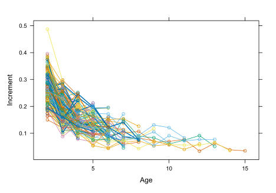
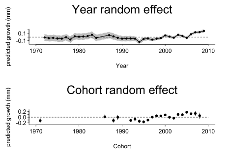

Giả sử bạn đang thấy có một phương pháp phân tích mới được áp dụng ở một vài nghiên cứu và bạn muốn học theo để áp dụng trong nghiên cứu của bạn thì bạn sẽ làm thế nào? Nếu là mình thì mình sẽ tìm xem có công bố nào có kèm code R, hoặc tốt hơn nữa là kèm cả dữ liệu, để làm theo. Hiện nay, ngày càng nhiều các nhà nghiên cứu công bố kèm code R và dữ liệu để đảm bảo tính tái lập và minh bạch trong khoa học. Vì thế, việc tìm code R để học theo phương pháp mới có thể sẽ không quá khó. Thông thường thông tin này có tìm ở mục Data availability hoặc Supplementary information/materials (Hình 1).
Hình 1: Ví dụ về thông tin code R được ghi chú ở mục Data availability từ một nghiên cứu của nhóm mình
Ví dụ trong trường hợp của mình khi thực hiện nghiên cứu về ảnh hưởng của nhiệt độ tới sự phát triển của cá. Mình đã học theo phương pháp phân tích sử dụng mô hình hỗn hợp (mixed effects model) được mô tả trong Morrongiello and Thresher (2015). Ở phần Supplementary information, nhóm tác giả có đính kèm file hướng dẫn (S1_tutorial.pdf), R code (S2_R_code.txt), và dữ liệu ví dụ (S3_within_zone_example_data.csv, S4_among_zone_example_data.csv, S5_example_temperature.csv) (link). Ở dưới là ví dụ mình thực hiện theo một vài bước phân tích.
# 1. Tải thư viện cần dùng
####Packages used:
library(lme4)
library(AICcmodavg)
library(effects)
library(lattice)
library(plyr)
# 2. Tải dữ liệu
#######data reading and preparation##########
# Data<-read.csv('within zone example data.csv')###Supplement S2
Data<-read.csv('./data/S3_within_zone_example_data2.csv')###Supplement S2
# Mình để file trong thư mục data nên phải thêm ./data/ trước tên file
# tên file cũng khác bản hướng dẫn vì tên trong file Supplementary Information là S3_within_zone_example_data
# file S3_within_zone_example_data2 là bản copy của file gốc và đã xóa các dòng thông tin mô tả trong file, đảm bảo file đúng cấu trúc để tải vào R
# 3. Khám phá dữ liệu
# 3.1. Kiểm tra dữ liệu
head(Data) FishID sex AAC Cohort Age Year Increment Temp
1 fish1014 F 6 2004 2 2005 0.283 14.66527
2 fish1014 F 6 2004 3 2006 0.282 14.48516
3 fish1014 F 6 2004 4 2007 0.234 14.79234
4 fish1014 F 6 2004 5 2008 0.192 14.52392
5 fish1014 F 6 2004 6 2009 0.195 14.52599
6 fish1066 F 5 2005 2 2006 0.300 15.67758str(Data)'data.frame': 739 obs. of 8 variables:
$ FishID : chr "fish1014" "fish1014" "fish1014" "fish1014" ...
$ sex : chr "F" "F" "F" "F" ...
$ AAC : int 6 6 6 6 6 5 5 5 5 5 ...
$ Cohort : int 2004 2004 2004 2004 2004 2005 2005 2005 2005 1994 ...
$ Age : int 2 3 4 5 6 2 3 4 5 2 ...
$ Year : int 2005 2006 2007 2008 2009 2006 2007 2008 2009 1995 ...
$ Increment: num 0.283 0.282 0.234 0.192 0.195 ...
$ Temp : num 14.7 14.5 14.8 14.5 14.5 ...# 3.2. Vẽ sự phát triển (increment) theo độ tuổi của từng cá thể cá
###plot of individual growth trajectories
xyplot(Increment ~ Age, group=FishID, Data, type=c('l','p'))
# 4. Phát triển và so sánh mô hình
###centring function
c. <- function (x) scale(x, scale = FALSE)
###covert Year and Cohort variables into factors
Data$fYear <- factor(Data$Year)
Data$fCohort <- factor(Data$Cohort)
#######within zone models#####
M1a<- lmer (log(Increment) ~ c.(log(Age)) * sex + c.(log(AAC)) + (1|FishID),Data)
M1b<- lmer (log(Increment) ~ c.(log(Age)) * sex + c.(log(AAC)) + (c.(log(Age))|FishID),Data)
#model comparison
models<-list(M1a,M1b)
Modnames <- c('M1a ', 'M1b ')
aictab(cand.set = models, modnames = Modnames, sort = TRUE)
Model selection based on AICc:
K AICc Delta_AICc AICcWt Cum.Wt Res.LL
M1b 9 29.19 0.00 1 1 -5.47
M1a 7 43.82 14.63 0 1 -14.83M2a<- lmer (log(Increment) ~ c.(log(Age)) * sex + c.(log(AAC)) + (c.(log(Age))|FishID) + (1|fYear), Data)
M2b<- lmer (log(Increment) ~ c.(log(Age)) * sex + c.(log(AAC)) + (c.(log(Age))|FishID) + (1|fCohort), Data)
###intraclass correlations
vYear<-VarCorr(M2a)$fYear[1]
vFishID<-VarCorr(M2a)$FishID[1]
vAge<-VarCorr(M2a)$FishID[4]
covar<-VarCorr(M2a)$FishID[2]
vErr<- (attr(VarCorr(M2a),'sc'))^2
vYear / (vYear + vFishID + vAge + covar + vErr)[1] 0.093585M3a<- lmer (log(Increment) ~ c.(log(Age)) * sex + c.(log(AAC)) + (c.(log(Age))|FishID)+(c.(log(Age))|fYear), Data)
M3b<- lmer (log(Increment) ~ c.(log(Age)) * sex + c.(log(AAC)) + (c.(log(Age))|FishID) + (c.(log(Age))|fCohort), Data)
M4a<- lmer (log(Increment) ~ c.(log(Age)) * sex + c.(log(AAC)) + (c.(log(Age))|FishID) + (1|fYear) + (1|fCohort), Data)
M4b<- lmer (log(Increment) ~ c.(log(Age)) * sex + c.(log(AAC)) + (c.(log(Age))|FishID) + (c.(log(Age))|fYear) + (1|fCohort), Data)
M4c<- lmer (log(Increment) ~ c.(log(Age)) * sex + c.(log(AAC)) + (c.(log(Age))|FishID) + (1|fYear) + (c.(log(Age))|fCohort), Data)
M4d<- lmer (log(Increment) ~ c.(log(Age)) * sex + c.(log(AAC)) + (c.(log(Age))|FishID) + (c.(log(Age))|fYear) + (c.(log(Age))|fCohort), Data)
#model comparison
models<-list(M2a,M2b,M3a,M3b,M4a,M4b,M4c,M4d)
Modnames <- c('M2a', 'M2b', 'M3a', 'M3b', 'M4a', 'M4b', 'M4c', 'M4d')
aictab(cand.set = models, modnames = Modnames, sort = TRUE)
Model selection based on AICc:
K AICc Delta_AICc AICcWt Cum.Wt Res.LL
M3b 12 -3.58 0.00 0.53 0.53 14.00
M4d 15 -1.86 1.72 0.23 0.76 16.26
M4c 13 -1.62 1.96 0.20 0.96 14.06
M4a 11 2.89 6.47 0.02 0.98 9.74
M2b 10 3.75 7.33 0.01 0.99 8.28
M4b 13 5.80 9.38 0.00 1.00 10.35
M2a 10 10.69 14.27 0.00 1.00 4.81
M3a 12 12.15 15.73 0.00 1.00 6.14######R square for mixed models
rsquared.glmm=function(modlist) {
do.call(rbind,lapply(modlist,function(i) {
if(inherits(i,"merMod") | class(i)=="merLmerTest") {
VarF=var(as.vector(fixef(i) %*% t(i@pp$X)))
VarRand=colSums(do.call(rbind,lapply(VarCorr(i),function(j) j[1])))
VarResid=attr(VarCorr(i),"sc")^2
Rm=VarF/(VarF+VarRand+VarResid)
Rc=(VarF+VarRand)/(VarF+VarRand+VarResid)
Rsquared.mat=data.frame(Class=class(i),Marginal=Rm,Conditional=Rc,
AIC=AIC(update(i,REML=F))) }
else { print("Function requires models of class lm, lme, mer, or merMod")
} } ) ) }
rsquared.glmm(models) Class Marginal Conditional AIC
1 lmerMod 0.7007901 0.7927409 -16.45144
2 lmerMod 0.6611250 0.7757751 -22.89028
3 lmerMod 0.7012023 0.7926967 -14.77326
4 lmerMod 0.6715244 0.7841018 -29.70404
5 lmerMod 0.6764349 0.7824463 -23.91876
6 lmerMod 0.6612243 0.7794147 -25.36365
7 lmerMod 0.6733929 0.7849517 -27.84531
8 lmerMod 0.6744630 0.7869937 -25.24410# 5. Kết quả - biểu đồ sự thay đổi của random effect year và cohort theo thời gian
####random effects plots##########
#extract Year effects
(year.M2a<-ranef(M2a)$fYear[,1]) [1] -0.011975833 -0.033402458 -0.022439709 -0.041640628 -0.045025493 -0.006591945 -0.068984823 0.019982792
[9] 0.009115164 0.014556459 0.026624965 0.062216194 -0.022048068 0.052948221 0.016859315 -0.021187849
[17] -0.045082310 -0.042568595 -0.041745588 -0.045032756 -0.132382226 -0.053902305 -0.041016305 -0.070587237
[25] -0.045860386 -0.028157924 0.043776886 0.011848323 -0.017894531 0.061316820 0.031287132 -0.023419819
[33] 0.076812844 0.130887230 0.135910160 0.166804281 [1] 0.08196238 0.08203359 0.08211348 0.08219220 0.08226733 0.08233843 0.08240561 0.08246917 0.08252944 0.08258672
[11] 0.08264130 0.08269344 0.08274336 0.08195474 0.08201033 0.07214039 0.06853313 0.06877573 0.06901528 0.05447987
[21] 0.05185677 0.04626742 0.04026116 0.03417336 0.03362048 0.03209954 0.03108327 0.02895958 0.03091763 0.02922310
[31] 0.02710191 0.03183351 0.02955100 0.02896907 0.02853120 0.03674424M2ayear<-data.frame(y=year.M2a)
M2ayear$upper<-(M2ayear$y+year.se.M2a)
M2ayear$lower<-(M2ayear$y-year.se.M2a)
M2anew <- data.frame(year = (as.numeric(levels(Data$fYear))))
M2adata<-cbind(M2anew,M2ayear)
#extract Cohort effects
(Cohort.M3b<-ranef(M3b)$fCohort[,1]) [1] -0.120352820 0.015960353 -0.115666370 -0.003367630 -0.112950908 -0.069405896 -0.142823077 -0.163884467
[9] -0.100750429 0.003964947 0.048524135 0.045853919 0.080322554 -0.001311191 -0.034289397 0.097539589
[17] 0.087660546 0.175577457 0.122254937 0.132485542 0.054658207 [1] 0.08325457 0.08322781 0.06966498 0.08330365 0.04878526 0.07207844 0.05620691 0.05012749 0.04250535 0.04656485
[11] 0.04069136 0.03414402 0.03761646 0.04348991 0.04213525 0.02987136 0.04673146 0.04287816 0.04631257 0.07056595
[21] 0.10244815M3bCohort<-data.frame(y=Cohort.M3b)
M3bCohort $SE<-( Cohort.se.M3b)##specify SEs
M3bCohort $upper<-(M3bCohort$y+Cohort.se.M3b)
M3bCohort $lower<-(M3bCohort$y-Cohort.se.M3b)
M3bnew <- data.frame(Cohort = (as.numeric(levels(Data$fCohort))))
M3bdata<-cbind(M3bnew,M3bCohort)
#the plots
par(mfrow=c(2,1))
##plot year
plot(range(M2anew$year), range(M2ayear), type = "n", ann = FALSE,axes=F,xlim=c(1970,2010))
axis((1),las=1,tcl=-.2,cex.axis=1,xaxp=c(1970,2010,4),mgp=c(3,.4,0))
axis((2),las=1,tcl=-.2,cex.axis=1,mgp=c(3,.4,0))
box(bty='l')
CI.U <- M2ayear[, "upper"]
CI.L <- M2ayear[, "lower"]
X.Vec <- c(M2anew$year, tail(M2anew$year, 1), rev(M2anew$year), M2anew$year[1])
Y.Vec <- c(CI.L, tail(CI.U, 1), rev(CI.U), CI.L[1])
polygon(X.Vec, Y.Vec, col = "grey", border = NA)
#matlines(M2anew$year,M2ayear, lty = c(1, 2, 2), type = "l", col = c("black", "", ""),lwd=1.5)
matlines(M2anew$year,M2ayear, lty = c(1, 2, 2), type = "l", col = c("black", "grey", "grey"),lwd=1.5)
points(M2adata$year,M2adata$y,pch=16,cex=.8)
lines(c(1950,2010),c(0,0),lwd=1,lty=2)
mtext('predicted growth (mm)',side=2,cex=1,line=2.5)
mtext('Year',side=1,cex=1,line=2.5)
mtext('Year random effect',side=3,cex=2,line=2)
##plot cohort
xy.error.bars<-function (xbar,ybar,x,y){
plot(x, y, pch=16,cex=1,axes=FALSE,ylab='',xlab='',ylim=c(-.25,.25), xlim=c(1970,2010))
arrows(x, y-yb, x, y+yb, code=3, angle=90, length=0,lwd=1)
axis((1),las=1,tcl=-.2,mgp=c(3,.4,0))
axis((2),las=2,tcl=-.2,mgp=c(3,.4,0))
box(bty='l')
}
x<-M3bdata$Cohort
y<- M3bdata$y
xb<-c('')
yb<- M3bdata$SE
xy.error.bars(xb,yb,x,y)
lines(c(1960,2010),c(0,0),lwd=1,lty=2)
mtext('Cohort',side=1,line=2.5,cex=1)
mtext('predicted growth (mm)',side=2,cex=1,line=2.5)
mtext('Cohort random effect',side=3,cex=2,line=2)